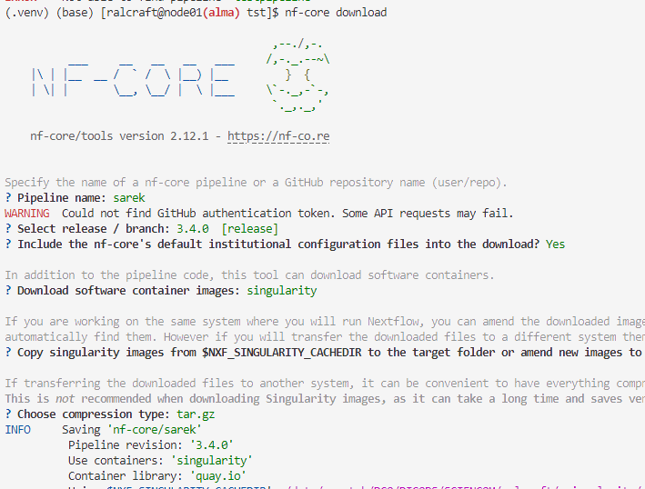

Running nf-core on Alma - Setup and check
This tutorial covers running a simple test nf-core workflow on Alma to sanity check access and modules are installed correctly and working and run a test. In part 2 run sarek.
Step 1: Log on to an interactive node on Alma
# to alma
ssh username@alma.icr.ac.uk
# interactive session with 10GB memory and 2 cores
srun --pty --mem=10GB -c 2 -t 30:00:00 -p interactive bash
Before starting
You should have initialised mamba as part of your standard Alma setup. If you have, you will see this by default python. /opt/software/easybuild/software/Mamba/23.1.0-0/bin/python Check it by the following:
(base) [ralcraft@node01(alma)]$ which python
/opt/software/easybuild/software/Mamba/23.1.0-0/bin/python
(base) [ralcraft@node01(alma)]$ python --version
Python 3.10.10
Step 2: Create an nf-core directory
Step 3: Install the nf-core/tools package and python environment
You only need to install the python environment once, subsequently you can load it.
If you are already in a python environment type deactivate to exit it.
-
Creating the python environment
-
Reloading it in subsequent sessions
- Note you could alternatively use a mamba environment for this. The mamba environment loads the java version required for nextflow.
Step 4: Load java and export the singularity cache location
You will need to do this in every session
module load java/jdk15.0.1
export NXF_SINGULARITY_CACHEDIR=/data/scratch/YOUR/PATH/GROUP/username/.singularity/cache
Step 5: Check the versions
Step 6: Run the nf-core test workflow
The nf-core workflows can be run in 3 ways, either directly from GitHub, or they can be downloaded first. Although it is recommended to run them directly from GitHub unless you are developing them, it can cause GitHub access problems in an HPC environment, so I will describe them, with a preference for the GitHub clone.
-
- Running from GitHub
-
- Cloning from GitHub and running
start back in the nfcore directory (
cd /data/scratch/YOUR/PATH/GROUP/username/nf-coreorcd ..)
- Cloning from GitHub and running
start back in the nfcore directory (
-
- Using nf-core download module With this option, you download the entire workflow so it can be run offline. With the other options there is downloading as and when so eventually everything will be downloaded - e.g., the singularity modules are downloaded on first use and then reused from the singularity cache. With download, the entire thing is downloaded into the given directory. This may not be desired. There can be problems with this functionality so go back to a previous mode if so.
For this you type in nf-core download and then follow the prompts:

Step 7: Check the output
The pipeline outputs are written in two newly created directories: - an output directory as specified in the command argument --outdir. - a work directory in the directory they were running from. The work directory is important for troubleshooting as any error will be in the logs there including all the data and parameters used in the commands that failed.